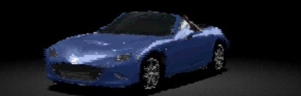
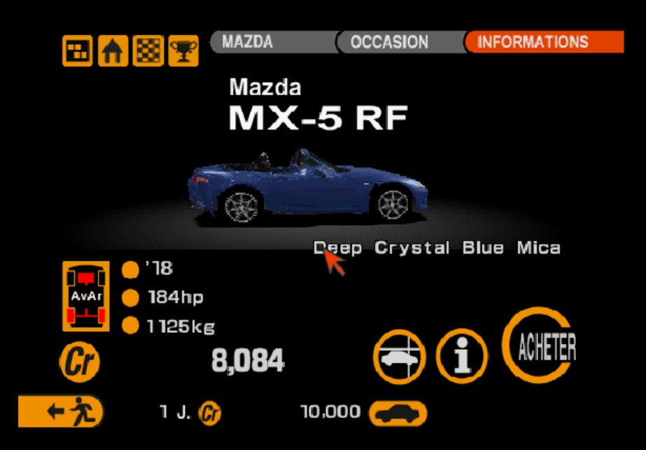
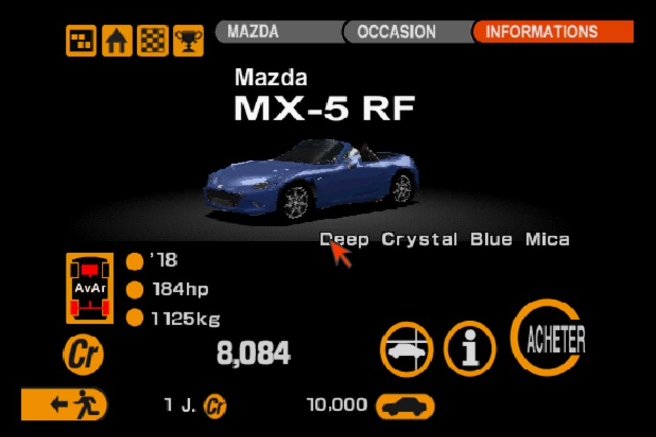
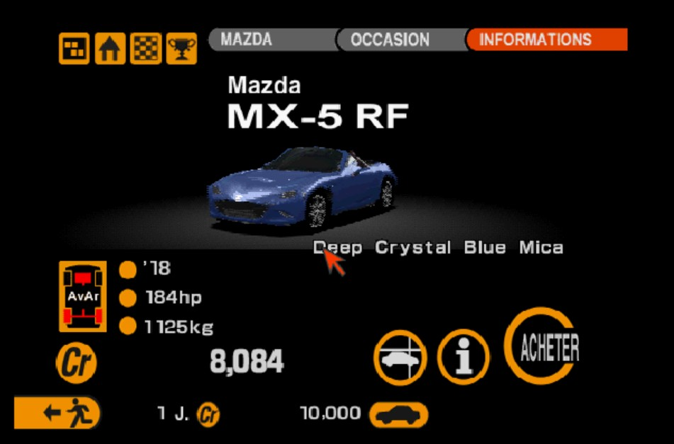

MazdaMX-5 RF

Gran Turismo 2 sur PlayStation : le disque Simulation d'origine (Europe SCES-12380 ou USA), le disque combiné ou GT2 Plus de pez2k. La MX-5 RF prend la place des MX-5 de ton choix, capotée ou décapotée, et tu obtiens au choix une nouvelle image disque pour la PlayStation, ou un fichier pour gt-2-pc, le portage PC du jeu. Tout est fabriqué à partir de ta copie du jeu : aucun fichier du jeu n'est fourni ici.
01Ce que tu obtiens
02Fabriquer dans ton navigateur
Quoi fabriquer
Ou en ligne de commande
Il te faut :
- ton image du disque Gran Turismo 2 : Simulation (Europe ou USA), combiné ou GT2 Plus (
.chd,.cueou.bin) ; mazda_mx5_rf.kn5du mod Assetto Corsa Mazda MX-5 RF Hardtop, à extraire ;- Python 3 avec
numpyetPillow, et ce dépôt.
cd games/gran-turismo-2 python make_gt2.py --disc "Gran Turismo 2 Plus Combined (Europe).chd" --kn5 mazda_mx5_rf.kn5 --out "GT2 MX-5 RF.chd"
| --car CODE=closed|open | quelle MX-5 remplacer, et avec quel toit ; à répéter pour plusieurs voitures. Par défaut : aminn=closed et amivn=open. |
| --cheat | ajoute le menu de triche (voir plus bas). |
| --version, --version-sub | le texte du bandeau des écrans de démarrage (--version "" pour ne rien écrire). |
| --out | en .chd : un CHD directement ; en .bin : un .bin et son .cue. |
Pas besoin de chdman : l'outil lit et écrit lui-même les CHD, le résultat va directement dans Batocera ou DuckStation.
Pour gt-2-pc : python make_gt2_mods.py --disc … --kn5 mazda_mx5_rf.kn5 --out gt2pc_mx5.zip (mêmes --car).
03Jouer
- Image disque : ouvre-la dans DuckStation, Batocera ou un autre émulateur PlayStation (ouvre le
.cue), ou grave-la. - gt-2-pc : décompresse le zip dans le dossier du port (celui de
gt2game.exeetPLAY.bat) et lanceJOUER_MX5.bat. Le dossiermods/mx5est lu par-dessus le jeu, qui n'est pas modifié :PLAY.batlance toujours le jeu d'origine. Le port ne lit pas encore les images de titre ni la description du concessionnaire, qui restent celles d'origine. - En mode GT, les RF sont chez le concessionnaire d'occasion Mazda, à la place des MX-5 choisies.
- Ton image d'origine n'est pas modifiée : pour revenir en arrière, il suffit de la relancer.
04En jeu



05Menu de triche

Coche menu de triche (image disque, disque européen) et le disque reçoit aussi
GranTurismo2-OverlayCheat : maintiens SELECT (ou L1 + R1 + L2 + R2 dans Batocera)
et un petit menu apparaît par-dessus le jeu, pour figer le chrono des permis et changer les crédits en direct.
En ligne de commande, c'est --cheat. Il existe aussi seul, en patch .ppf / .xdelta.
06Pour les curieux
L'archive du disque GT2.VOL réécrite en place, les modèles .cdo / .cno et leurs textures, les formats des données, des menus et des écrans de démarrage :
le README sur GitHub.
La RF reprend la coque, les images et la texture de la version Gran Turismo.